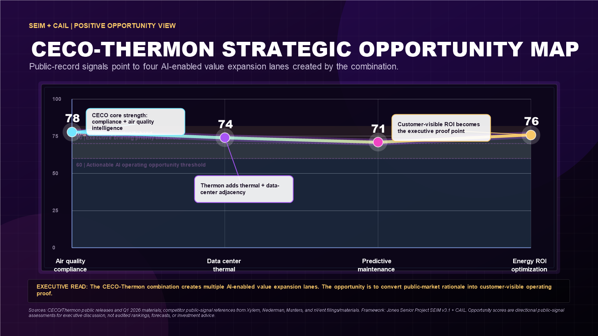

A compressed public-company timeline concentrates leadership attention and integration pressure.
Private preview for Ken Jones
Integration Intelligence Under Pressure
A public-record executive read on the CECO-Thermon combination: the transaction architecture appears strong, the timing is compressed, and the value-protection window depends on whether synergy execution, operating trust, and AI-enabled workflow leverage move together.
Point-in-time status: stockholders have approved the combination. Public materials
state the transaction is expected to close on or around June 1, 2026, subject to customary closing
conditions. This page avoids characterizing the transaction as closed until an official completion
announcement or SEC filing confirms it.
Public Signals. Private Pattern Recognition.
This page does not expose the internal framework. It shows the executive-safe output layer: public facts, public-signal inference, and the questions worth pressure-testing in a private briefing.
The synergy clock and the operating-model readiness clock are effectively the same clock.
Demand strength raises the cost of slow integration because execution capacity matters more.
A larger backlog increases the value of workflow discipline, talent retention, and clean handoffs.
The proprietary lens
What the Framework Is About
The work applies a proprietary public-record intelligence model to four executive questions: how the transaction is structured, where integration execution risk may emerge, what competitors are signaling through AI-enabled products and operating investments, and which near-term decisions could protect the synergy window.
Integration risk
Assumption opacity
Decision timing
Parallel AI adoption
Competitive posture
It does not ask, "Is the deal good?"
It asks where the public record suggests the transaction is structurally strong, where execution risk may emerge, and which questions deserve pressure-testing before the 36-month window hardens.
It protects the playbook.
The public version reveals the conclusion layer, not the scoring engine, weighting logic, diagnostic sequence, or proprietary layer architecture that produces the read.
It creates the executive meeting.
The goal is a high-signal 30-minute conversation: where the external read maps cleanly to CECO's priorities, where it misses, and what deserves deeper review.
Where Value Can Leak
The risk is rarely the headline. It is the quiet delay between financial commitment and operating trust, especially if synergy assumptions become visible before co-ownership and communication are strong enough to carry them.
Leadership bandwidth goes to final closing mechanics, customer reassurance, and operating continuity.
Synergy assumptions can move from model to people, processes, reporting lines, and local reality.
Retention, technical handoffs, and cultural alignment can determine whether synergy stays on schedule.
The market sees whether the integration created a stronger platform or just a larger one.
Strategic Opportunity Map
The positive read is that the combination creates multiple AI-enabled value expansion lanes where the public-market rationale can become customer-visible operating proof.

Air quality compliance
Data center thermal
Predictive maintenance
Energy ROI optimization
Customer-visible proof
The Ask
Put the public-record read in front of the right CECO executive for a focused 30-minute conversation: where the transaction appears strong from the outside, which AI-enabled value expansion lanes are most visible from the public record, and how the 36-month synergy window can become an operating advantage window without exposing the proprietary engine behind the analysis.
Public-record anchors:
This analysis is based exclusively on public filings, press releases, investor materials, earnings
materials, product pages, and other public information reviewed as of the date shown. CECO announced the
strategic combination with Thermon on February 24, 2026, describing an approximately $2.2 billion
stock-and-cash transaction and at least $40 million in annual cost synergies within 36 months
(CECO release).
CECO and Thermon announced the May 22, 2026 election deadline based on an expected June 1, 2026 close
(CECO election deadline release).
CECO reported Q1 2026 backlog above $1 billion and a 2.2x book-to-bill ratio
(CECO Q1 2026 release).
Stockholder approval was announced on May 28, 2026
(Thermon release).
Opportunity scores shown in the visual are proprietary directional public-signal assessments for executive
discussion, not audited measurements, forecasts, investment ratings, legal conclusions, or statements of
internal company fact.